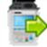
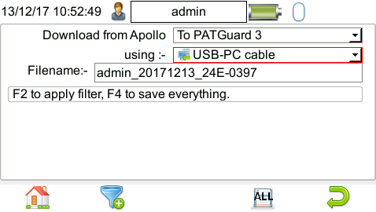

1
Open the main menu on the Apollo tester
The manual shows the main menu and the key areas of the screen. The download option is reached from this menu using the arrow key or F5

Non-technical guide
This page is written for someone who just wants the job done. It shows how to get the PAT export off the Apollo tester and how to use the converter on a normal web page.
Step 1
The manual shows the main menu and the key areas of the screen. The download option is reached from this menu using the arrow key or F5

Follow the download flow on the device and choose the option that saves the results to a file for PC use.

The download is complete after the blue bar reaches 100%
Step 2
Visit the converter in your browser. If you are reading this page, you are already there. Just select Converter in the top menu to go back to the main page.
Drag your exported .txt file into Choose a PAT export zone or click that zone to open a file picker.
Click Convert to CSV
The CSV file can be opened in Excel or any spreadsheet program. It contains all the test results in a simple table format.
Notes